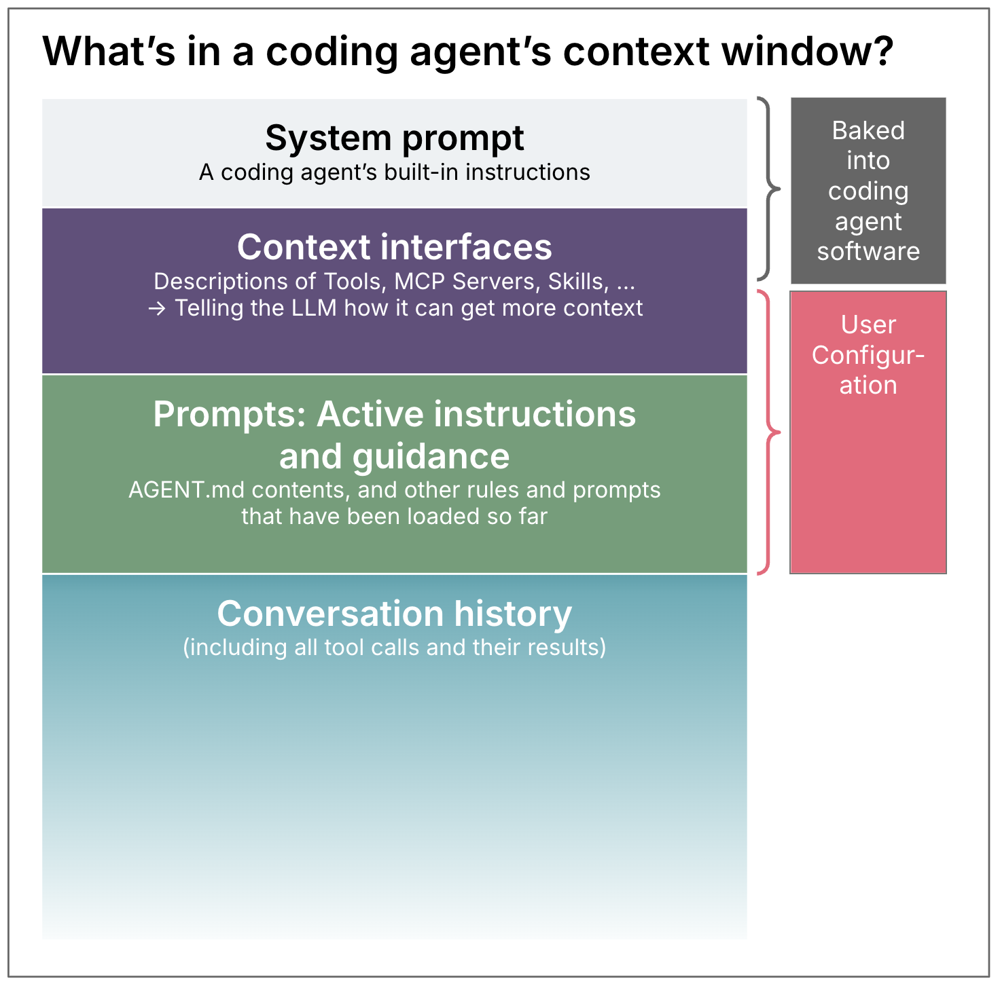
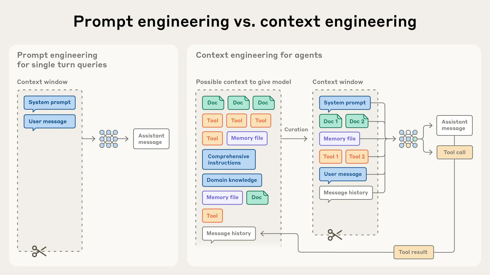
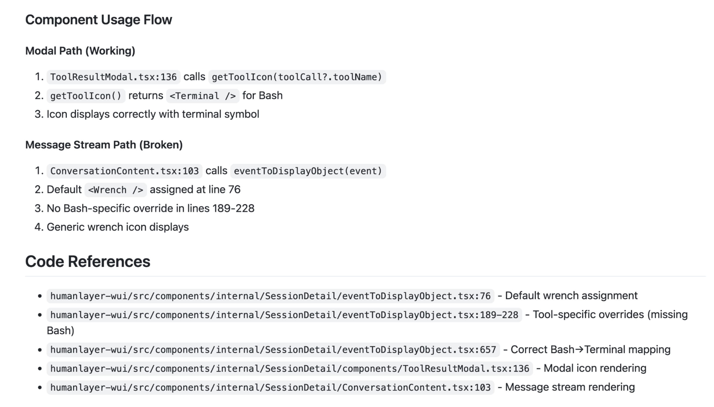

Engenharia de Contexto
Sumário
Ao final dessa aula, o aluno deve ser capaz de entender o conceito de janela de contexto e suas limitações, além de entender e implementar técnicas de engenharia de contexto.
Preâmbulo
Sobre as notas de aulas: i) Conteúdo escrito por mim em sua totalidade. Tabelas e figura foram geradas com auxílio do Claude. Estou deixando isso claro para que você tenha ciência de que se houver erro aqui ou achar o material ruim, a culpa é minha mesmo; e ii) as notas de aula são um guia para a discussão em sala de aula e servem muito pouco como conteúdo para estudo.
Introdução
Contexto é tudo, mas nem tudo cabe no contexto.
https://www.anthropic.com/engineering/effective-context-engineering-for-ai-agents
Contexto refere-se ao conjunto de tokens incluídos durante a amostragem de um modelo de linguagem de grande escala (LLM).
- Prompt
- Tools: as definições das ferramentas disponíveis, incluindo nome, descrição e parâmetros
- MCP: o contexto trazido por servidores externos conectados via Model Context Protocol
- Histórico de mensagens: toda a troca entre usuário e agente ao longo da sessão, incluindo chamadas de ferramentas e seus resultados
- Dados externos: documentos, resultados de busca, conteúdo de arquivos e qualquer outra informação recuperada durante a execução



Janela de contexto é o limite máximo de tokens que um LLM consegue considerar de uma vez ao gerar uma resposta.
| Família / empresa | Modelo | Janela de contexto |
|---|---|---|
| OpenAI | GPT-5.4 | 1,05 M tokens |
| Anthropic | Claude Sonnet 4.6 | 1 M tokens |
| Meta | Llama 4 Scout | 10 M tokens |
| Gemini 2.5 Pro | 1,05 M tokens |
Um agente pode ter uma janela de 1 milhão de tokens, mas não necessariamente colocar 1 milhão de tokens nela a cada chamada. O agent harness normalmente constrói o contexto dinamicamente.
Quanto maior a janela, não significa necessariamente que o modelo utilize igualmente bem tudo que está dentro dela.
A capacidade de recuperar e raciocinar sobre informações espalhadas por centenas de milhares de tokens continua sendo uma questão de desempenho.
Os Problemas
A janela é finita. Mas não seria só aumentar a janela de contexto?
O mecanismo de atenção não escala
Relações n² entre tokens.
Cada token tem que “prestar atenção” em todos os outros para decidir quais são os relevantes.
Context rot

Modelos não tratam todos os tokens da janela igualmente. Mesmo em tarefas simples de recuperação, o desempenho degrada, de forma não uniforme (nem linear), à medida que o input cresce, testado em 18 modelos diferentes.
O modelo continua capaz em contextos longos, mas com precisão reduzida para recuperação de informação e raciocínio de longo alcance, quando comparado ao seu desempenho em contextos curtos.

Lost in the middle

A posição do documento no contexto impacta no resultado.
We observe that performance is often highest when relevant information occurs at the beginning or end of the input context, and significantly degrades when models must access relevant information in the middle of long contexts, even for explicitly long-context models.
Experimento:
- Deram ao LLM vários documentos;
- Apenas um documento continha a resposta para uma pergunta;
- Moveram o documento relevante para diferentes posições: começo, meio e fim do contexto.
- Mediram a acurácia da resposta.
Curva U: alta acurácia nas pontas, vale no meio.
- Início: o modelo tende a dar bastante peso às informações iniciais, especialmente instruções e contexto de alto nível.
- Meio: informações podem ser “perdidas” entre muitas outras.
- Fim: “O que acabei de ver provavelmente é relevante para o que vou responder agora.”
4 Modos de falha
Drew Breunig. How Long Contexts Fail. Drew Breunig, 22 jun. 2025. https://www.dbreunig.com/2025/06/22/how-contexts-fail-and-how-to-fix-them.html
Context Poisoning: When a hallucination makes it into the context
An especially egregious form of this issue can take place with “context poisoning” – where many parts of the context (goals, summary) are “poisoned” with misinformation about the game state, which can often take a very long time to undo. As a result, the model can become fixated on achieving impossible or irrelevant goals.
Context Distraction: When the context overwhelms the training
O modelo desenvolve hiperfoco no contexto.
It was observed that as the context grew significantly beyond 100k tokens, the agent showed a tendency toward favoring repeating actions from its vast history rather than synthesizing novel plans.
Ao invés de usar a capacidade adquirida no treinamento, passou a utilizar muito o contexto.
Context Confusion: When superfluous context influences the response
Se você colocar algo no contexto, o modelo vai levar em consideração, mesmo que essa informação seja irrelevante. Alguns modelos já estão melhorando em ignorar ou descartar informação irrelevante, mas ainda é comum ver informação ruim distrair modelos.
Less is more: Optimizing function calling for llm execution on edge devices." 2025 Design, Automation & Test in Europe Conference (DATE). IEEE, 2025.
When the team gave a quantized (compressed) Llama 3.1 8b a query with all 46 tools it failed, even though the context was well within the 16k context window. But when they only gave the model 19 tools, it succeeded.
Laban, Philippe, et al. “Llms get lost in multi-turn conversation.” International Conference on Learning Representations. Vol. 2026. 2026.
In simpler terms, we discover that when LLMs take a wrong turn in a conversation, they get lost and do not recover.
Context Clash: When parts of the context disagree
Parece um pouco com context confusion, mas a informação aqui não é irrelevante é conflitante com algo que já está no contexto.
Exemplo
O system prompt instrui:
“Sempre use aspas simples e indentação de 2 espaços.”
O RAG recupera um arquivo antigo do repositório que recomenda:
“Use aspas duplas e indentação de 4 espaços.”
Outro exemplo
Um agente de suporte tem no contexto a política de reembolso atual (via tool call a um sistema interno) e um trecho de e-mail antigo do cliente citando uma política antiga diferente.
O contexto contém instruções conflitantes. O agente agora precisa decidir qual seguir, e o resultado observável costuma ser inconsistência.
Solução: Engenharia de Contexto
The engineering problem at hand is optimizing the utility of tokens.
Encontrar o menor conjunto possível de tokens de alto sinal que maximiza a probabilidade do resultado desejado.
Isso vale tanto para quem vai construir agentes/harness quanto para quem vai usar agentes e precisa fazer isso de maneira adequada e que não impacte no desempenho, que é o nosso caso.
Vou discutir o nosso caso, mas falar um pouco sobre quem vai construir agentes também.
The anatomy of effective context
As técnicas do LangChain: https://www.langchain.com/blog/context-engineering-for-agents: write, select, compress, and isolate.
Formas de evitar e lidar com contextos longos. Não são conflitantes.

Write
Manter artefatos fora do agente para ele consultar: AGENTS.md , CLAUDE.md NOTES.md de sessão, specs etc.
Paralelo com essa ideia: https://research.memgpt.ai/: Towards LLMs as Operating Systems - Teach LLMs to manage their own memory for unbounded context!
O próprio agente faz isso. structured note-taking.
The agent regularly writes notes persisted to memory outside of the context window. These notes get pulled back into the context window at later times.
NOTES.mdSCRATCHPAD.md
Mas quando o agente consulta, não vai pro contexto e preenche ele do mesmo jeito?
Sim, mas…
- A informação só entra quando é necessária;
- A informação que gerou algo por ser muito maior que o processo destilado no NOTES.md, por exemplo.
- Sobrevive ao término das sessões.
- Pode ser combinado com técnicas de descarte e compressão.
Select
Trazer somente o que é relevante e no momento certo.
Ao invés de trazer tudo (RAG tradicional), just-in-time retrieval.
Exemplo: ao invés de ler todos os documentos de um diretório, decidir antes qual ler.
Parelelo com “Lost in the Middle”: selecionar menos e melhor evita literalmente o vale de desempenho no meio do contexto.
Compress
Reduzir o contexto quando se aproxima do limite.
Técnica: compaction.
“Anota o resumo para a gente reiniciar essa conversa amanhã (outra sessão), por favor” :)
Tradeoff: toda compressão tem custo de cache, comprimir tem preço em latência e economia.
Isolate
Arquiteturas de sub-agentes. Dividir contexto entre múltiplos agentes ou sub-processos, cada um com sua própria janela.
Tradeoff: Isolar contexto melhora Confusion e Distraction, mas pode gerar decisões conflitantes entre sub-agentes que não compartilham estado.
Que tipo de tarefa é mais adequada a esse princípio? Que tipo de tarefa não é?
Revisar um PR grande com mudanças em múltiplos módulos seria um bom cadidato a ser paralelizado?
Engenharia de Contexto na prática
Relembrando: técnicas de engenharia de contexto podem ser aplicadas pra quem está desenvolvendo agentes e para quem está desenvolvendo COM agentes. Vamos focar no segundo caso.
How three YC startups built their companies with Claude Code (link)
Tratar o contexto como um artefato de engenharia.
Sistematizaram práticas de context engineering.
- Separate research, planning, and implementation into discrete sessions
- Be deliberate about context management
- Monitor and interrupt the chain of thought
Insighs
- colocar conhecimento do projeto em arquivos persistentes;
- separar contexto geral de contexto específico da tarefa;
- criar skills para procedimentos recorrentes;
- utilizar subagentes para tarefas específicas;
- fazer o agente investigar o código antes de modificar;
- transformar decisões tomadas durante o desenvolvimento em conhecimento reutilizável.
Lembra?
Movimento de:
“Como escrever um prompt melhor?"
para:
“Como construir e manter o contexto que o agente precisa para trabalhar?"
HumanLayer
Relato completo: https://www.humanlayer.dev/blog/advanced-context-engineering
A infra que usam: https://github.com/humanlayer/humanlayer/tree/main/.claude
The nayve way
Vai lá, filhão.
Slightly Smarter: Intentional Compaction
“Resume, vamos começar em outro.”
“Write everything we did so far to progress.md, ensure to note the end goal, the approach we’re taking, the steps we’ve done so far, and the current failure we’re working on”

O que consome o contexto?
- Busca por arquivos
- Compreensão do fluxo de execução do código
- Edits
- Logs de testes/build
- Grandes blocos de JSON gerados pelas ferramentas
Compactar
Solução é compactar essas informações em artefatos estruturados. Bom exemplo:

Um caso curioso (extremo): repomirror
link: https://github.com/repomirrorhq/repomirror/blob/main/repomirror.md
while :; do cat [prompt.md](http://prompt.md/) | amp; done
O estado vai sendo alterado a cada iteração e persistido no github, scratchpad, todo.md, logs, testes, bd, filesystem etc.
We came back in the morning to an almost fully functional port of Browser Use to TypeScript.
Frequent Intentional Compactation
Essentially, this means designing your ENTIRE WORKFLOW around context management, and keeping utilization in the 40%-60% range (depends on complexity of the problem ).
Framework RPI: Research, Plan, and Implement.
Vamos discutir essa e outras técnicas similares na aula de especificação de agentes. Mas é importante que você saiba que as boas práticas de desenvolver com agentes passa por ter algo nessa linha.
Lembra que vivo dizendo “é tudo sobre os princípios/fundamentos/conceitos” ? Isso aqui é engenharia bem feita. Fazíamos antes dos agentes, fazemos agora e vamos fazer sempre.
Outros casos
https://alabeduarte.com/context-engineering-with-claude-code-my-evolving-workflow/
https://martinfowler.com/articles/exploring-gen-ai/context-engineering-coding-agents.html
https://www.reddit.com/r/ClaudeAI/comments/1ockyib/i_shipped_a_production_ios_app_with_claude_code/
https://x.com/vartekxx/article/2074864291568664646
Refs
- AnthropicAI Effective context engineering for AI agents
- Exploring Gen AI: Context Engineering for Coding Agents (Martin Fowler)
- How to Apply Anthropic’s Context Guide (Rephrase It)
- Context Rot (Chroma Research)
- Lost in the Middle: How Language Models Use Long Contexts (Liu et al., TACL 2024)
- How Contexts Fail and How to Fix Them (Drew Breunig)
- Gemini 2.5 Technical Report (Context Poisoning)
- Less is more: Optimizing function calling for llm execution on edge devices. (DATE Conference, IEEE, 2025)
- LLMs get lost in multi-turn conversation. (Laban, Philippe, et al. - ICLR 2026)
- LangChain Accounts Context Engineering
- MemGPT: Towards LLMs as Operating Systems
- How three YC startups built their companies with Claude Code
- Dex Advanced Context Engineering for Coding Agents (HumanLayer)
- GitHub: humanlayer/.claude
- GitHub: repomirror/repomirror.md
- Browser Use to TypeScript Port (Repomirror Commit)
- Context Engineering: How I’ve Been Using Claude Code in My Daily Workflow
- I shipped a production iOS app with Claude Code - 843 commits (twikwik)
- Context Engineering: the Karpathy-Cherny method (vartekx)